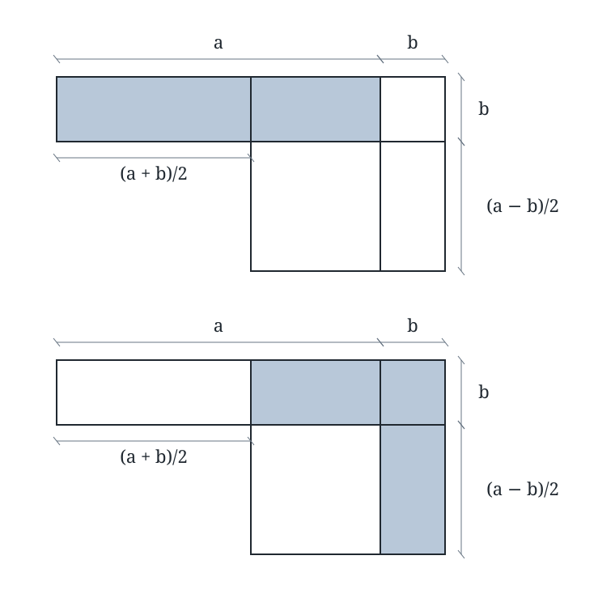

Instructor solution key. Equivalent valid arguments and constructions are acceptable.
1. Squaring numbers ending in 5
Write the number as \(10n+5\), where \(n\geq0\) is an integer. Multiply the number preceding the final 5 by its successor, then append 25 (with leading zeros omitted).
\[55^2=3025,\qquad65^2=4225,\qquad75^2=5625,\qquad85^2=7225.\]The general proof is
\[(10n+5)^2=100n^2+100n+25=100n(n+1)+25.\]Multiplication by 100 shifts the decimal representation of \(n(n+1)\) two places to the left. Adding 25 fills the last two places, with no carry. The case \(n=0\) gives \(5^2=25\).
2. Finding a pair
(a) Partition the set into four disjoint pairs:
\[\{1,8\},\quad\{2,7\},\quad\{3,6\},\quad\{4,5\}.\]Each pair sums to 9. Choosing five distinct numbers places five choices into four pairs, so at least one pair contains two chosen numbers, by the pigeonhole principle.
(b) Yes: choose \(\{1,2,3,4\}\). The largest possible sum of two distinct chosen numbers is \(3+4=7<9\). Thus five is the smallest number of choices that guarantees a pair summing to 9.
3. A remainder problem
We seek \(N\equiv1\pmod2\), \(N\equiv4\pmod5\), and \(N\equiv8\pmod{11}\). The combined modulus is \(2\cdot5\cdot11=110\).
(a) Reconstruction. Build one number for each condition that is 1 modulo the relevant divisor and 0 modulo the other two:
- For 2: \(55\) is odd and divisible by 5 and 11.
- For 5: \(22\equiv2\pmod5\), and \(3\cdot2\equiv1\pmod5\). Use \(66=3\cdot22\).
- For 11: \(10\equiv-1\pmod{11}\), so \(100=10\cdot10\equiv1\pmod{11}\). It is divisible by 2 and 5.
Multiply these contributions by the required remainders and add:
\[N_0=1\cdot55+4\cdot66+8\cdot100=1119=10\cdot110+19.\]Subtracting multiples of 110 preserves all three remainders, so the smallest positive candidate is \(\boxed{19}\).
(b) Check. \(19=2\cdot9+1=5\cdot3+4=11\cdot1+8\).
(c) All solutions. If \(N\) is any solution, \(N-19\) is divisible by 2, 5, and 11. Since these divisors are pairwise relatively prime, their product 110 divides \(N-19\). Conversely, adding any multiple of 110 preserves the remainders. Thus all positive solutions are
\[\boxed{N=19+110k,\qquad k=0,1,2,\ldots.}\]This also proves that 19 is the smallest positive solution.
4. Trisecting a line segment
Construction. Draw an auxiliary ray from \(A\) that does not lie on \(AB\). With any fixed compass opening, mark consecutive points \(P_1,P_2,P_3\) along it so that \(AP_1=P_1P_2=P_2P_3\). Join \(P_3\) to \(B\). Through \(P_1\) and \(P_2\), construct lines parallel to \(P_3B\); let their intersections with \(AB\) be \(C\) and \(D\).
The parallels are legitimate straightedge-and-compass constructions: at each \(P_j\), copy the angle between the ray pointing toward \(A\) and \(P_3B\), choosing the corresponding side. To copy an angle, draw equal-radius arcs about the old and new vertices, transfer the chord between the original arc intersections with the compass, and draw the new ray through the transferred point.
Proof. Parallelism gives \(\triangle AP_1C\sim\triangle AP_3B\) and \(\triangle AP_2D\sim\triangle AP_3B\). Therefore
\[\frac{AC}{AB}=\frac{AP_1}{AP_3}=\frac13,\qquad\frac{AD}{AB}=\frac{AP_2}{AP_3}=\frac23.\]It follows that \(AC=CD=DB=AB/3\).
Optional extension. For an integer \(m\geq2\), mark \(m\) equal steps along the auxiliary ray, join the last point to \(B\), and draw parallels through the intermediate points. Similarity places the intersections at fractions \(1/m,2/m,\ldots,(m-1)/m\) of \(AB\). For \(m=1\), no division is necessary.
5. One quadratic, three methods
(a) Geometry: four rectangles
Each rectangle has area \(10x/4=(5/2)x\), so its sides are \(x\) and \(5/2\). Placing one along each side of the original square leaves four corner squares, each of side \(5/2\).
The added area is \(4(5/2)^2=25\), and the larger square has side \(x+5\). Hence
\[(x+5)^2=39+25=64.\]Lengths are positive, so \(x+5=8\), giving \(\boxed{x=3}\).
(b) Quadratic formula
\[x^2+10x-39=0,\qquad x=\frac{-10\pm\sqrt{100+156}}2=\frac{-10\pm16}2.\]Thus \(\boxed{x=3\text{ or }x=-13}\).
(c) Average and product
The roots have sum \(-10\), average \(-5\), and product \(-39\). Write them as \(-5-d\) and \(-5+d\), with \(d\geq0\). Then
\[(-5-d)(-5+d)=25-d^2=-39,\qquad d^2=64,\qquad d=8.\]The roots are \(-5-8=-13\) and \(-5+8=3\).
(d) Comparison and verification
Both algebraic methods give the same two roots. The geometric method treats \(x\) as a positive length, so it cannot represent \(x=-13\). Both values nevertheless satisfy the algebraic equation:
\[3^2+10(3)=9+30=39,\qquad(-13)^2+10(-13)=169-130=39.\]Optional challenge: A geometric identity

Set \(s=(a+b)/2\) and \(d=(a-b)/2\). Then \(s-d=b\) and \(b+d=s\).
In the upper diagram, the shaded rectangle has dimensions \(a\) and \(b\), hence area \(ab\). Separate it at the vertical line marking the end of the length \(s\). Its left piece has dimensions \(s\) by \(b\); its right piece has dimensions \(d\) by \(b\).
Keep the right piece fixed. Rotate the left \(s\)-by-\(b\) rectangle through a right angle and place it in the rightmost vertical strip of the lower diagram. That strip has width \(b\) and height \(b+d=s\), so the rotated piece fits exactly. These two pieces form the lower shaded region, with no overlap or gaps. Rotation preserves area, so the shaded areas are equal.
The lower shaded region is also the difference between a square of side \(s\) and an unshaded square of side \(d\). Consequently,
\[ab=s^2-d^2=\boxed{\left(\frac{a+b}{2}\right)^2-\left(\frac{a-b}{2}\right)^2}.\]Connection. The product of two numbers equals the square of their average minus the square of their half-difference. Equivalently, if the average is \(m\) and the product is \(p\), then the half-difference satisfies \(d^2=m^2-p\), and the numbers are \(m\pm d\). The diagram proves the identity for \(a>b>0\); the algebraic identity \((m-d)(m+d)=m^2-d^2\) holds for all real \(m,d\), including the negative average and negative product in Problem 5.